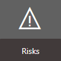
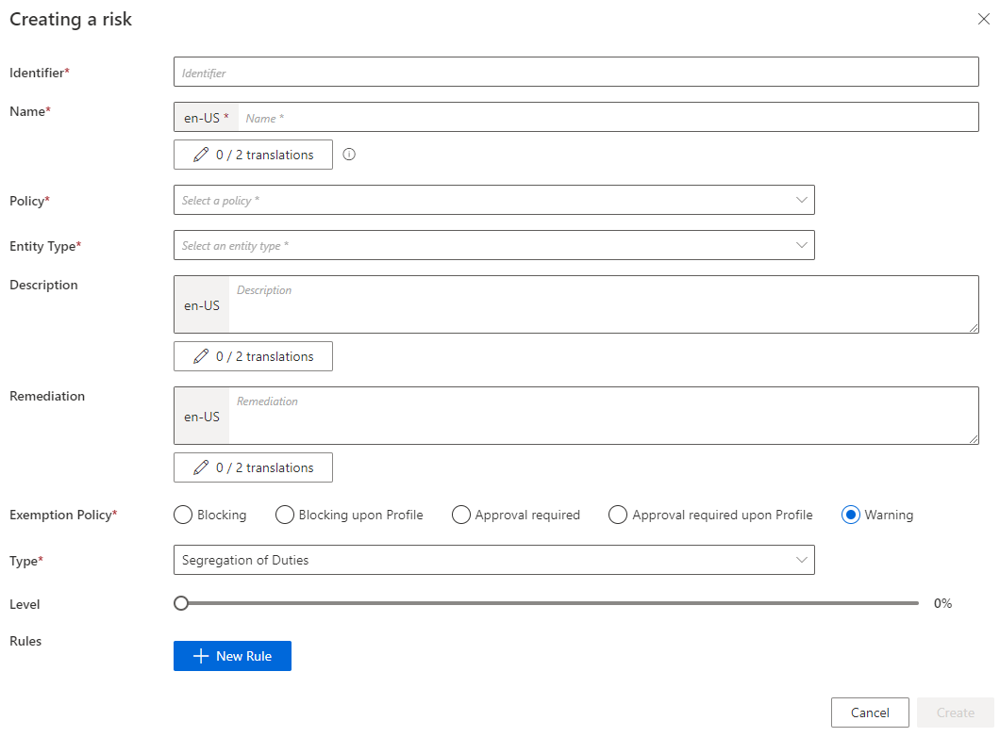
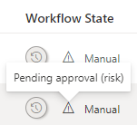
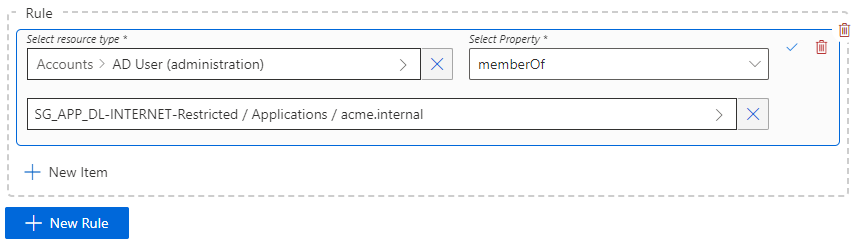
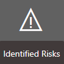
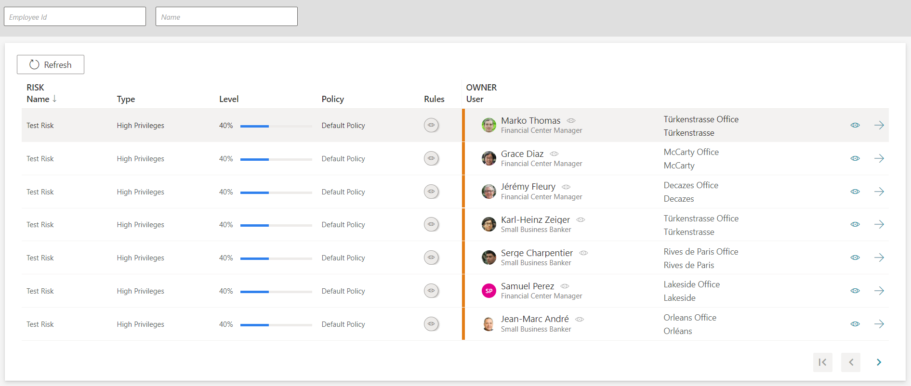

Manage Risks
How to use the Risk Management module to identify entitlement assignments that pose a security risk, especially about segregation of duties and high privileges.
Overview
A Risk describes a sensitive situation in which entitlement assignments need to be monitored for security purposes. Examples include:
- Segregation of duties: a situation where at least two entitlements pose a risk when assigned to the same identity.
- High privilege: a particularly sensitive entitlement.
Risk Management is essential to auditing. Among other things, it allows auditors to:
- Identify the identities representing the highest security risk.
- Compute the corresponding risk score.
- Schedule and Perform Access Certification accordingly.
Using risks involves three steps:
- Create a risk: declare the nature of the risk.
- Create risk rules: create the rules that assign risks to identities, depending on identities' entitlement assignments.
- Monitor risks: via the Identified Risks screen or certification campaigns.
Participants and Artifacts
Integrators may need the help of the application owner, security manager and role model officers to assess risks inherent to entitlements.
| Input | Output |
|---|---|
| Identity repository (required) Role catalog (required) |
Risks catalog |
See the Create the Workforce Repository and Create Roles in the Role Catalog topics for additional information.
Create a Risk
Create a risk by proceeding as follows:
-
On the home page in the Configuration section, click on Risks.

-
On the risks page, click on the addition button at the top right corner.

-
Fill in the fields.

Identifier: must be unique among risks and without any whitespace.Name: will be displayed in the UI to identify the risk.Policy: Create a Policy in which the risk exists.Entity Type: Create an Entity Type targeted by the risk.Description: explanation of the risk that will be displayed with the exemption policy message.Remediation: potential alternative solutions that will be displayed with the exemption policy message.Exemption PolicySee the Risk Management topic for additional information.TypeLevel: risk level that is used to compute risk scores.Rules: a risk is based on the union of rules, themselves based on the intersection of rule items. A rule item specifies the risk-triggering resource(s). A high-privilege risk must contain at least one rule with one rule item. A segregation-of-duties risk must contain at least two rule items in the same rule.
When risks are based on the exemption policy called Approval required, the corresponding role requests appear on the Role Review screen with a specific workflow state. See below this note. See the Reconcile a Role topic for additional information.

Write risk rules
A risk rule is simply the condition that triggers the assignment of a risk to an identity, depending on the identity's entitlements.
Within Identity Manager, an entitlement assigned to an identity is represented by the value of a given navigation property, in a resource owned by said identity. See the Create an Entity Type topic for additional information.For example, imagine that we want to grant unlimited Internet access to the administrator profile of an identity. This entitlement won't be assigned directly to the identity but to their AD administration account. In our Active Directory, there is a resource called
DL-INTERNET-Restrictedidentified from among AD entries as a group. Therefore, we need to add this group membership to the properties of the identity's AD account, usingDL-INTERNET-Restrictedas a value of thememberOfproperty. -
Choose the resource type to be targetted by the risk. See the Categorize Resources topic for additional information.
We choose
AD User (administration)to prevent this situation from happening in our example. -
Choose the navigation property that corresponds to the situation.
memberOfin our example. -
Choose a value for this navigation property. The value would be a resource from the unified resource repository. See the Identity Management topic for additional information.
The group
DL-INTERNET-Restrictedin our example.
This final value is an entitlement, linked to the owner identity through the navigation property and the ownership relationship.
This final value is an entitlement, linked to the owner identity through the navigation property and the ownership relationship.
In our example, a risk is identified for a person as soon as their administration AD account is part of the
DL-INTERNET-Restrictedgroup. -
Click on Create.
Risks are taken into account from the moment the
Compute Resource Risk Scorestask runs (or the complete job which contains said task).
TheCompute Resource Risk Scorestask doesn't need to be launched right away, but new risks can't be identified before it runs at least once.
Monitor Identified Risks
After creating at least one risk and computing risk scores, identified risks are listed on the Identified Risks screen, accessible from the home page in the Administration section.


For a given identity in the list, user information can be viewed and accessed by clicking respectively on the eye and arrow buttons on the right-hand side.
Impact of Modifications
Modifications in a risk are taken into account only after running the Compute Risk Scores task. Therefore, risk scores are computed according to the new parameters.
After a modification: while risk scores are computed for all identities and assignments (pre-existing and newly created), a modified exemption policy is applied only to future entitlement assignments. For example, changing the exemption policy of a risk from warning to blocking won't remove entitlements from the identities who already have them. But future assignments are going to be blocked.
The deletion of a risk simply triggers the computation of risk scores during the next Compute Risk Scores task, and removes any exemption policy steps in an assignment request. See the
Risk Management
topic for additional information.
Verify Risk Management
In order to verify the process, assign to a fake identity a permission that is supposed to trigger the created risk, and check the consequences:
- The message displayed at the end of the entitlement request must correspond to the configuration of the exemption policy. See the Risk Management topic for additional information.
- Once the entitlement is assigned, a line must appear on the Identified Risks page.